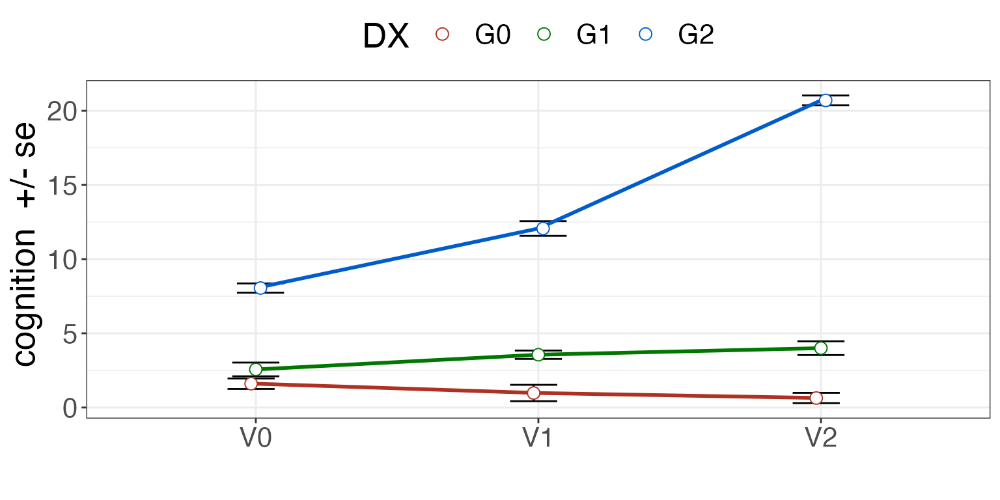
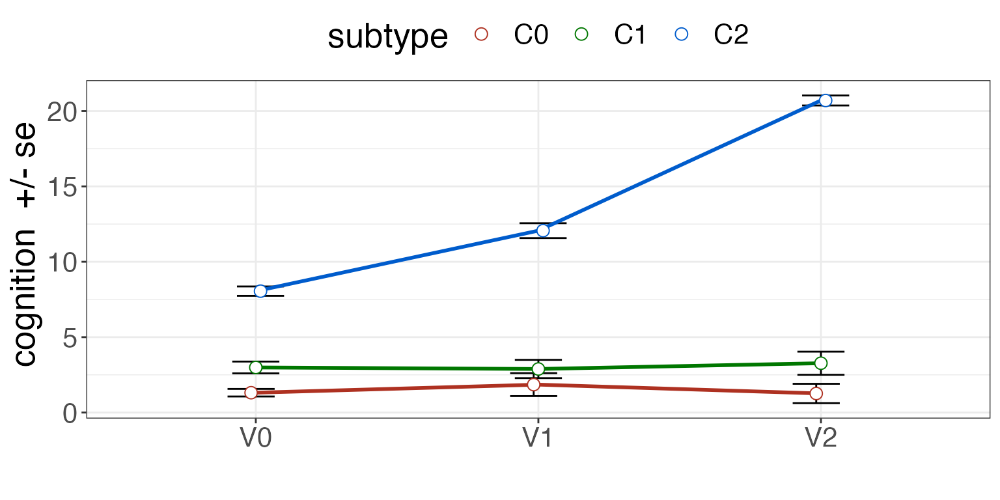
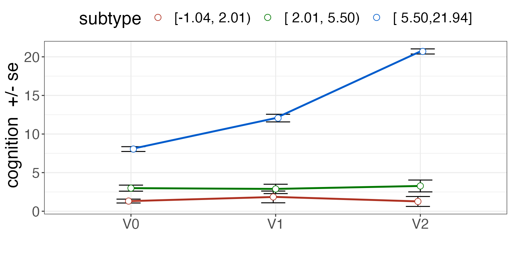

subtyper
Subtyper is a package for defining subtypes in patient populations based on data. A “subtyping method” uses data to classify subjects into groups that represent different disease etiologies, different progression paths or different sets of symptoms potentially arising from the same underlying pathology. Subtyping therefore tries to identify smaller but distinctive groups within an overall disorder. If the overall condition is dementia, then diagnoses could be considered as subtypes: Alzheimer’s disease, parkinson’s disease or frontotemporal lobar degeneration.
Subtyping methods must be predictive. That is, they follow a machine learning style with a “training” phase for the models followed by inference wherein we apply the fixed models to new data. Subtyper’s design follows this paradigm which will be seen in the examples below. While we only use linear regression here, the basic principles can extend to other modeling techniques including deep learning.
Subtyping and “staging” are or may be inter-related. For example, some sub-types may only be identifiable at a given disease stage. Other subtypes are fundamentally different across all disease stages (e.g. genetic forms of AD or PD vs idiopathic forms). In PD, some patients “jump” between classically defined subtypes (see 2021 Lancet review on PD diagnosis). Ths package does not claim to produce “good” subtypes. It’s just a tool that allows one to test and visualize different approaches to subtyping whether they are stage-specific or not.
The brief code block below shows us the core steps in subtyper. We will comment on each step within its own section.
library(subtyper)
#> Warning in .recacheSubclasses(def@className, def, env): undefined subclass
#> "numericVector" of class "Mnumeric"; definition not updated
#> Registered S3 methods overwritten by 'parameters':
#> method from
#> as.double.parameters_kurtosis datawizard
#> as.double.parameters_skewness datawizard
#> as.double.parameters_smoothness datawizard
#> as.numeric.parameters_kurtosis datawizard
#> as.numeric.parameters_skewness datawizard
#> as.numeric.parameters_smoothness datawizard
#> print.parameters_distribution datawizard
#> print.parameters_kurtosis datawizard
#> print.parameters_skewness datawizard
#> summary.parameters_kurtosis datawizard
#> summary.parameters_skewness datawizard
mydf = generateSubtyperData( 100 )
rbfnames = names(mydf)[grep("Random",names(mydf))]
mydf = outlierness( mydf, rbfnames )
#> [1] "r update: 2"
#> [1] "r update: 3"
#> [1] "r update: 4"
#> [1] "r update: 5"
#> [1] "r update: 6"
mydf = highestQualityRepeat( mydf, "Id", "visit", "OL_KNN_SUM")
qdf = trainSubtypeUni( mydf, "cognition", c("C0","C1","C2"), c(0.33,0.66) )
pdf = predictSubtypeUni( mydf, qdf, "Id" )The function:
n = 250 # number of subjects
mydf = generateSubtyperData( n )simply supplies a dataframe that fits our assumptions about how data is organized.
subject IDs are provided
each subject has one or more “visits”
at each visit, there may be more than one repeats of a measurement
there is some measurement of the quality of each measurement (optional)
While our simulated data is complete, in reality, many subjects may be missing data. We can further simulate this (at random) by performing:
It is important to note that these methods are likely to be more generalizable if they are trained and applied to data that is “good” quality. While we assume that the data comes with some quality measurements (domain specific), we may also use data-driven approaches to measuring how close each timepoint-repeat is to related data. If such a datapoint is “far away” from its nearest neighbors, then it is likely to be an outlier. The outlierness function implements several methods for making such estimations which can guide data inspection.
rbfnames = names(mydf)[grep("Random",names(mydf))]
mydf = outlierness( mydf, rbfnames )These outlierness measurements are added to the data frame by the above call. The names are prepended with “OL_”. Which particular measurement – or set of measurements – is best may depend on your dataset.
Warning: Some subjects will always be outliers according to these methods. However, that does not mean they should be rejected. Decisions about data rejection should be put off to the last possible moment. Another option is to simply covary for the outlierness score — with the assumption that the score is not or is only marginally related to the outcomes of interest.
Given the above comments, we might want to find the “best” repeat for each time point in the case when there are multiple repeats. Here, we use the OL_KNN_SUM score as an outlierness measurement.
mydf = highestQualityRepeat( mydf, "Id", "visit", "OL_KNN_SUM")The function adjustByCovariates can be used to train and predict covariate adjusted scores. Here, we train the adjustment based on group G0 and adjust with respect to RandomBasisProjection01. In practice, these variables may include age, sex and other nuisance variables.
myform = "cognition ~ RandomBasisProjection01 "
mydf = adjustByCovariates(mydf,myform,"DX","G0")
# produces a variable called cognition_adjustedWe employ a three group model as it matches our known (simulated) diagnostic groups. Otherwise, we could use a four group model here in order to demonstrate the difference from the known three group diagnosis.
# four group model
qdf4 = trainSubtypeUni( mydf, "cognition_adjusted", c("C0","C1","C2","C3"), c(0.25,0.5, 0.75) )
# three group model
qdf = trainSubtypeUni( mydf, "cognition_adjusted", c("C0","C1","C2"), c( 0.33, 0.66 ) )
knitr::kable( qdf, caption="Subtyping training result.")| subtype | measurement | quantiles | quantileValues | group |
|---|---|---|---|---|
| C0 | cognition_adjusted | 0.00 | -Inf | NA |
| C1 | cognition_adjusted | 0.33 | 2.014896 | NA |
| C2 | cognition_adjusted | 0.66 | 5.497247 | NA |
We define the subtype from the baseline data. This means that we assume that the data at baseline is sufficient to confidently identify which grouping to which the subject should belong.
pdf = predictSubtypeUni( mydf, qdf, "Id", "visit", "V0" )Data-driven subtypes should overlap — in our simulated data example — with diagnosis.
| G0 | G1 | G2 | |
|---|---|---|---|
| C0 | 13 | 7 | 0 |
| C1 | 5 | 12 | 0 |
| C2 | 0 | 0 | 18 |
See the difference with diagnosis.
summ = plotSubtypeChange( mydf, "Id", "cognition", "DX", "visit", whiskervar='se' )
print( summ )
See the difference with subtype.
summ = plotSubtypeChange( pdf, "Id", "cognition", "subtype", "visit", whiskervar='se' )
print( summ )
Plot the subtypes with cutpoints displayed.
pdf = predictSubtypeUni( mydf, qdf, "Id", "visit", "V0", rename=FALSE )
summ = plotSubtypeChange( pdf, "Id", "cognition", "subtype", "visit", whiskervar='se' )
print( summ )
Visualization of the subtype definition against various outcomes is key to establishing validity.